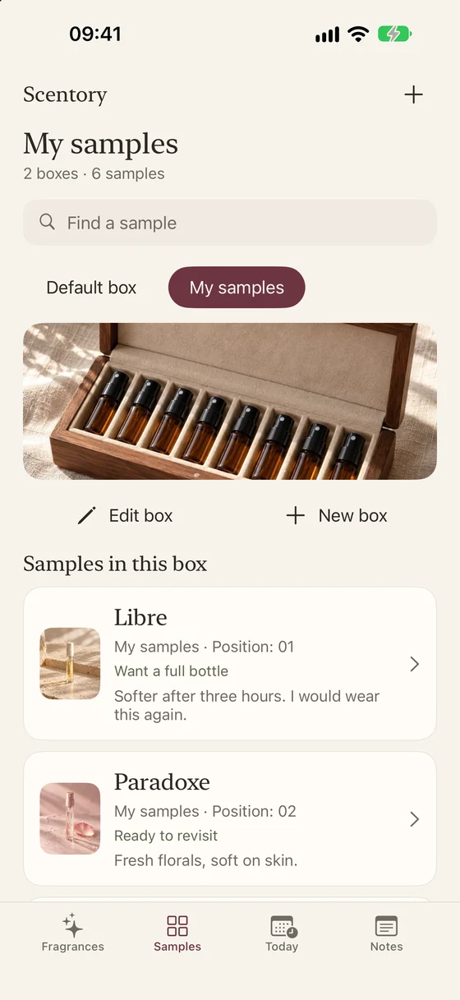
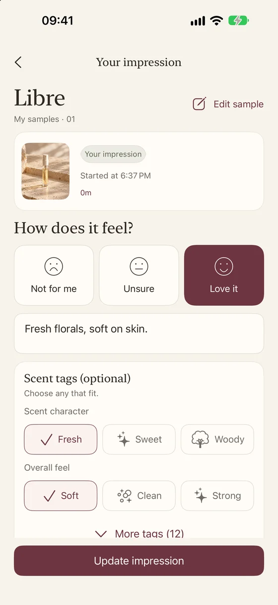

Organize and find samples
Group vials into boxes, add photos or position numbers, and search your collection. You can also mark a position on your own box photo.
iPhone · iOS 17 or later
Give each sample a place in your collection. Keep first impressions and later notes together, then decide what to try again or buy.
Works offline. Private iCloud sync is optional.

Find the vial you want, record how it wears, and keep your own reasons for a decision.
Group vials into boxes, add photos or position numbers, and search your collection. You can also mark a position on your own box photo.
Keep the first impression and later observations in the same trial. Add scent tags, a note, or an optional reminder to revisit it.
Mark a sample to keep, retry, pass on or buy. Revisit your reasons and earlier decisions in the timeline.
Open an existing trial to add how the fragrance changed after the first spray. Keeping the observations together makes a later retest easier to compare.

No. Add a sample manually, or look it up in the bundled offline catalog.
Yes. Records can stay on your device. Private iCloud sync is optional, and Scentory can export JSON backups.
The free plan includes ten samples, the default box and one custom box. Scentory Pro removes sample and custom-box limits.